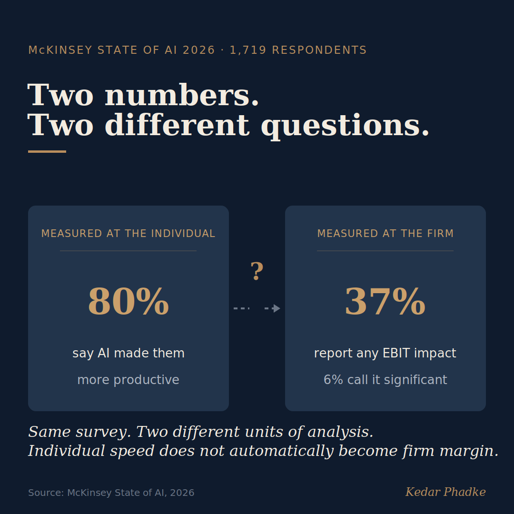

Two Numbers From the Same Survey, Measuring Two Different Things
According to the latest McKinsey State of AI survey, 80 per cent of employees say AI has made them more productive, but only 37 per cent of organisations report any impact on their earnings. The survey included 1,719 respondents and was published recently. Many articles have described this as a puzzle, or used it as evidence that AI is overhyped. I think it points to something more specific. It is a measurement error.

Two Numbers, Two Different Questions
What a number measures is not always the same as what we conclude from it. Productivity at the individual level considers whether someone finished a task more quickly. Earnings at the organisational level ask whether the organisation gained more value than it spent. These ideas are related, but they are not the same, and they only connect if something specific links them.
Statisticians call this the unit of analysis problem. Data collected from individuals does not automatically add up to conclusions about the whole organisation. For example, if a worker finishes a report in twenty minutes instead of forty, they are faster. However, what happens to those saved twenty minutes depends on how the organisation is structured. The time could be used for more valuable work, filled with extra tasks, or lost to additional coordination and review, which AI often requires. The survey does not distinguish between these outcomes.
What Boards Should Actually Be Asking
Asking, "do your employees feel more productive with AI?" is a real and valid question. But it is not the same as asking how individual speed leads to higher profits. The first question gives positive survey results. The second requires a clear link from faster work to extra time, then to using that time for activities that increase revenue or reduce costs, and finally to higher earnings. Most organisations using AI today can only demonstrate the first step.
McKinsey's data shows where the link breaks. Only a small group, about six per cent called high performers, report significant earnings from AI, with at least five per cent of EBIT coming from it. These organisations have one thing in common. They redesigned their workflows around AI rather than simply adding it to existing processes. In other words, the companies that converted faster work into higher earnings did so by changing how work is organised, not merely by providing staff with better tools. Microsoft's 2026 research supports this, finding that about two thirds of AI's impact comes from organisational changes, and only a third from individual skills.
The firms that turned individual speed into earnings did it by changing the system the work runs on, not by handing better tools to individuals.
The Implication Worth Taking Seriously
When a leadership team approves AI investments based solely on employee productivity surveys, they are measuring input, not output. This is like counting gym visits to judge heart health. Going to the gym matters, but it is not sufficient. The real question is whether anything changes where performance is actually measured.
In practice, the test is simple. Look at the unit economics of the function where AI was deployed, and see whether the freed-up time shows up there as higher revenue or lower cost, rather than only as a better survey score.
The 37 per cent who report some earnings impact, and the six per cent who report a significant one, have managed to connect individual gains to company results. McKinsey's data shows they did this by redesigning workflows. Yet the larger question is why some organisations succeed at this redesign while most do not. This is really a question about how organisations are structured, not merely about the technology.
If you are developing your analytical skills, there is a useful habit to cultivate. Before using a statistic, check what level it measures and what level the conclusion addresses. If those levels differ, the conclusion is weak, however confident it sounds. The 80 per cent and 37 per cent figures are a good example. Both are accurate, but they answer different questions.
If your organisation already surveys employees about AI productivity, what process do you have to turn those individual gains into results that show up on the income statement?
#AI #Statistics #FutureOfWork #Leadership #EconomicsThe anchor is McKinsey's flagship annual survey, whose central finding runs against the promotional interest of a firm whose clients invest in AI, and it is verified against McKinsey's own report rather than secondary coverage.
Sources
- McKinsey, "The State of AI in 2026" (published 25 August 2026; online survey of 1,719 respondents across 97 nations, fielded 4 May to 8 June 2026): 80 per cent of respondents say AI improved their own productivity; 37 per cent attribute at least some EBIT impact to AI, essentially unchanged from 2025; about 6 per cent are "high performers" attributing at least 5 per cent of EBIT to AI and calling the impact significant, and these firms fundamentally redesign their workflows around AI. McKinsey.
- Microsoft's 2026 research, cited for the finding that roughly two-thirds of AI's measured impact traces to organisational factors and about one-third to individual skill, used here as independent corroboration of the same pattern.
A version of this essay was first shared on LinkedIn.